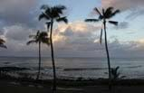
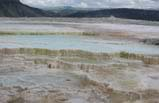

走四方網在09年改版之際，特別挑選數個美國東西海岸及夏威夷的暢銷套餐，以超低折扣回饋新老客戶！折扣多多，驚喜不斷！無論您是首次在走四方預訂，還是我們的忠實客戶，只要在2009年2月10日至3月10期間，預訂以下產品即可享受超低折扣價。



出發地點： 檀香山
出團日期：Jan 1st -Dec 31st : Daily
持續時間： 6 天 價格：$858 $798
主要景點：
•小環島 •玻利尼西亞文化中心 •茂宜島 •大島 •珍珠港&市區遊 •地面接送 •五晚酒店住宿 •免費的機場接送服務（7:00am-9:59pm）


出發地點：拉斯維加斯
出團日期：May 3rd 2009-Sep 27th 2009: Sat/
Jun 11th 2009-Aug 27th 2009: Wed/
持續時間： 7天 & nbsp; 價格：$544 $517.00
主要景點：
•拉斯維加斯出發•地面接送•六晚酒店住宿(獨家兩晚住宿黃石國家公園內，鹽湖城市區中心三星酒店，拉斯維加斯大道上的酒店) •聖喬治,猶他•錫安國家公園•布萊斯峽谷國家公園•鹽湖城,猶他•大提頓國家公園•黃石國家公園